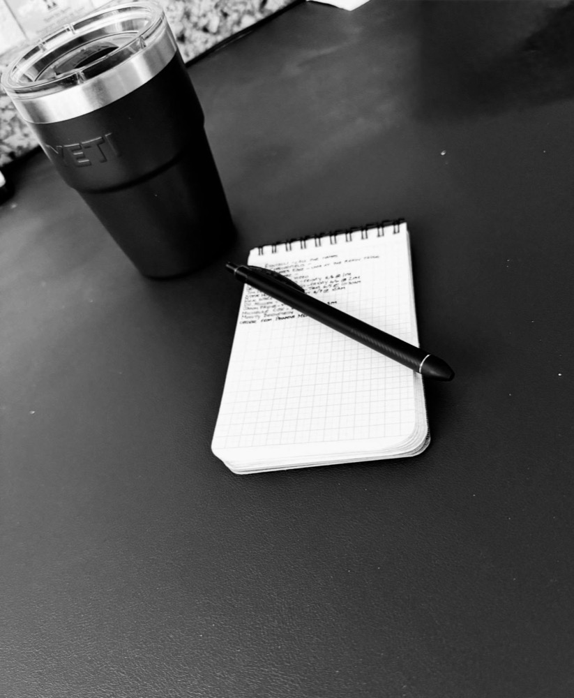
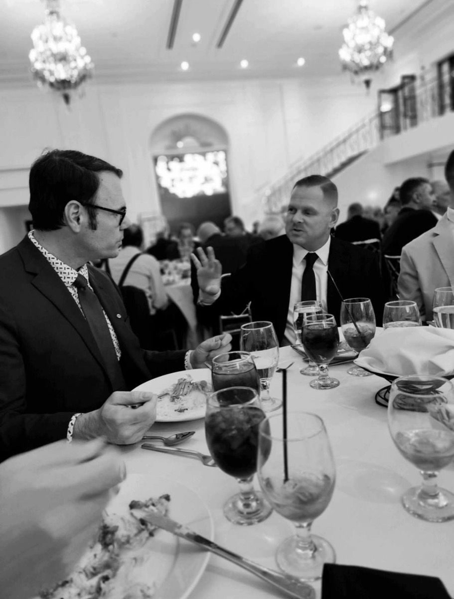
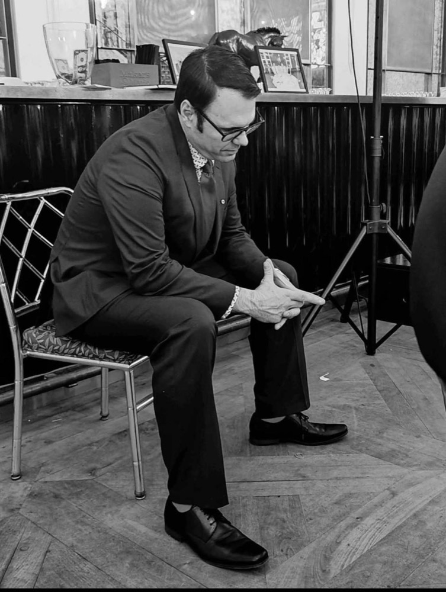

Development Program Rebuild
A ground-up audit and redesign of your fundraising program — strategy, portfolio, calendar, and case for support.
- Full development assessment
- Donor pipeline & portfolio design
- Annual fundraising plan
Second Story Consulting helps mission-driven organizations rebuild their fundraising, strengthen the operations behind it, and grow relationships that last — so the next chapter is the best one yet.
Whether your development program needs a fresh start, stronger systems, or a steady partner — we meet you where you are.

A ground-up audit and redesign of your fundraising program — strategy, portfolio, calendar, and case for support.
The systems that make fundraising run: CRM setup, clean data, gift processing, and reporting your team can trust.
Senior fundraising leadership on a monthly retainer — strategy, coaching, and hands-on help without a full-time hire.
Generosity grows when people feel seen. We practice responsive fundraising — personal, timely, and built around each donor's connection to your mission, not a mass-mail calendar.

Pay attention to the signals donors are already sending — what they give to, respond to, and care about.
Reach out personally and in the right moment, with a message that matches where each donor actually is.
Invite the next step that fits — the right ask, at the right time, in service of the donor's own generosity.
Inspired by the Listen → Connect → Suggest framework from Responsive Fundraising.
George Ricciardella is a nonprofit development professional with more than a decade of experience helping mission-driven organizations strengthen their fundraising, grant strategy, and donor engagement.
As Director of Development at Impact, a behavioral health nonprofit in Pasadena, George has helped secure major public and private funding — including more than $20 million in state infrastructure grants expanding substance use disorder treatment services across Los Angeles County.
His work sits at the intersection of fundraising, strategy, storytelling, and organizational infrastructure. He believes development should never operate in a silo: the strongest fundraising is built when development teams understand the real programmatic needs of the organization, translate them clearly, and earn funders' trust through honest, practical, mission-centered communication.
Clarify the goal, strengthen the system, tell the truth well, and build the relationships that move the work forward.
George isn't interested in jargon-heavy plans that sit untouched in a folder. He helps organizations identify what is actually needed, what is actually possible, and what steps will create real momentum.
Tell us a little about your organization and where fundraising feels stuck. We'll follow up within two business days to set up a free introductory call — no pitch, just a conversation.
Prefer email? Reach us directly at rick.e.ardella@gmail.com.
